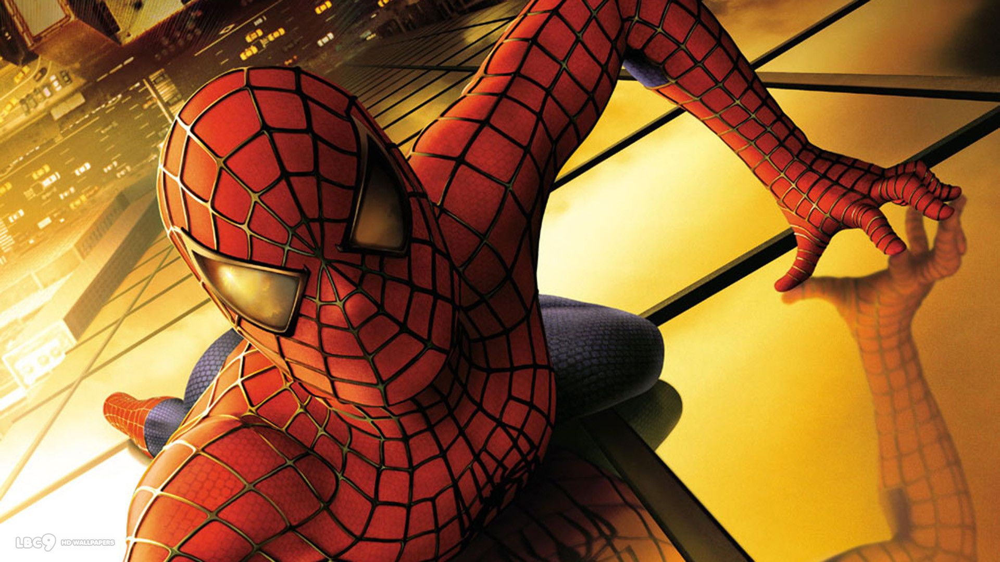
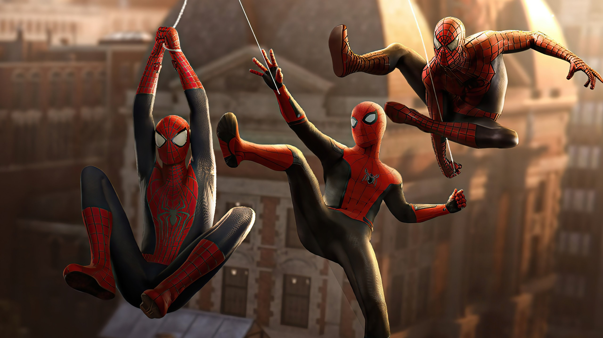
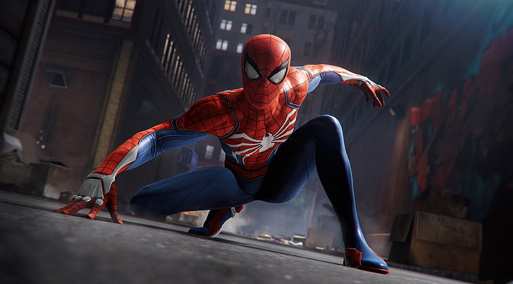
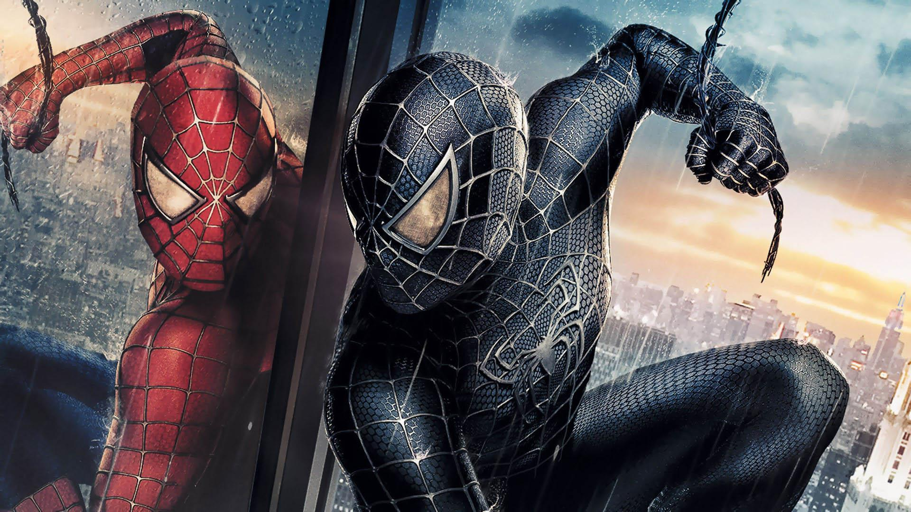

Spider-Man es el alias del vigilante enmascarado que opera al margen de la ley en los cinco condados de Nueva York. Conocido por sus asombrosas habilidades físicas y su negativa a revelar su identidad, este misterioso sujeto se ha convertido en el fenómeno digital más viral y debatido de los últimos años.
Capaz de esquivar proyectiles y realizar maniobras acrobáticas imposibles para cualquier atleta olímpico.
Utiliza un compuesto adhesivo similar a la tela de araña para columpiarse entre los rascacielos a gran velocidad.
Testigos aseguran haberlo visto detener vehículos en movimiento con sus propias manos.
Spider-Man: Brand New Day rompe récords
Beyond the Spider-Verse sufrió una filtración
Avengers: Doomsday ya está generando una enorme expectativa
Tom Holland podría regresar después de Brand New Day
Tom Holland: su futuro como Spider-Man
Zendaya y Tom Holland